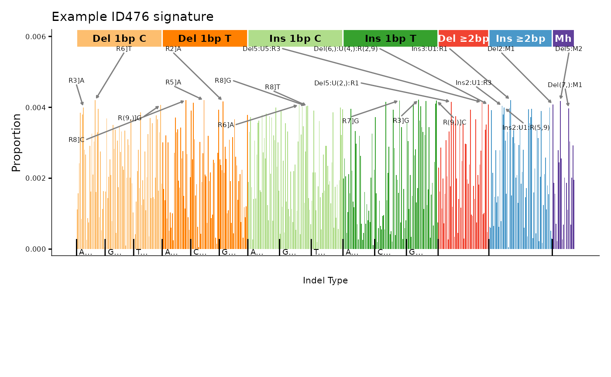
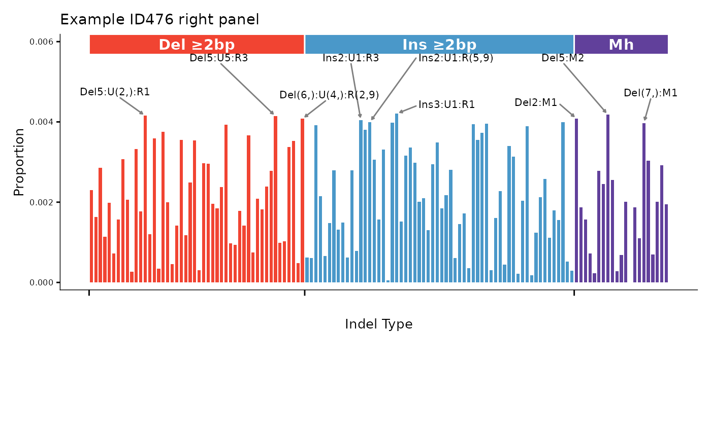
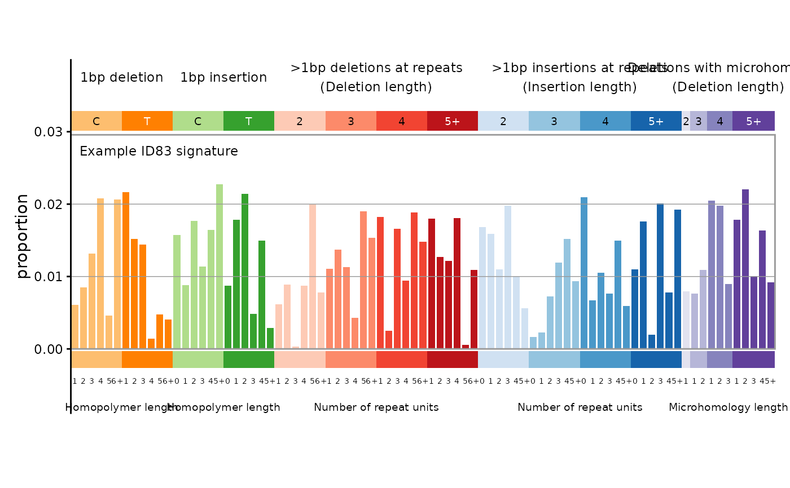
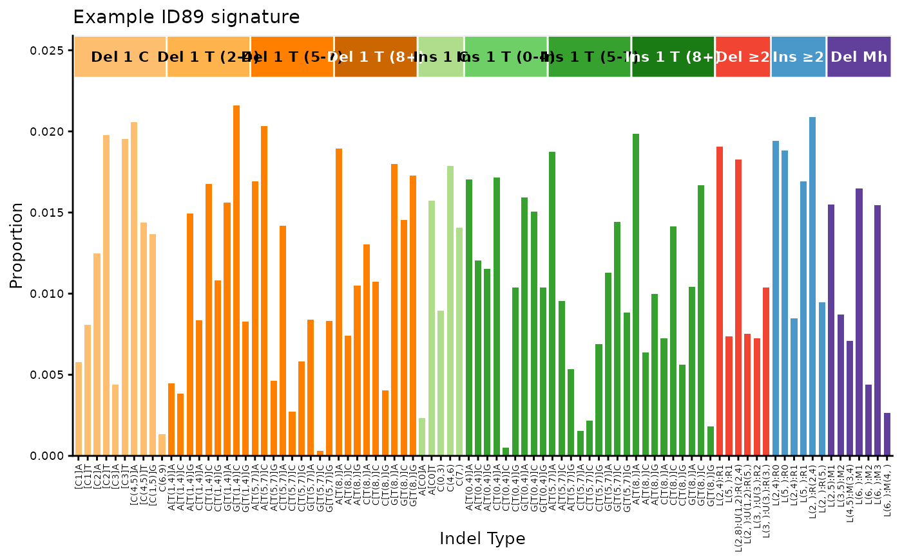

plot_476, plot_476_pdf, plot_476_right, plot_476_right_pdf, plot_83, plot_83_pdf, plot_89, plot_89_pdf
Source:R/plot_476.R, R/plot_476_pdf.R, R/plot_476_right.R, and 5 more
legacy_bar_plots.RdOriginal plot functions for indel mutational signature catalogs.
These are kept for backward compatibility. For new code, prefer
the ggplot2-consistent wrappers: plot_ID83(), plot_ID89(),
plot_ID476(), plot_ID476_right().
Usage
plot_476(
catalog,
block_text_cex = 0.78,
plot_title = NULL,
num_labels = 3,
ggrepel_cex = 0.52,
label_threshold_denominator = 7,
vline_labels = c(),
simplify_labels = TRUE,
base_size = 11,
title_text_cex = 1,
x_axis_tick_label_cex = 0.8,
y_axis_tick_label_cex = 0.7,
x_title_cex = 0.7,
y_title_cex = 0.9,
plot_complex = FALSE,
show_counts = NULL,
count_label_cex = 0.52,
block_text_size = NULL,
ggrepel_size = NULL,
title_text_size = NULL,
x_axis_tick_label_size = NULL,
y_axis_tick_label_size = NULL,
x_title_size = NULL,
y_title_size = NULL,
count_label_size = NULL,
text_size = NULL,
label_size = NULL
)
plot_476_pdf(
catalog,
filename,
num_labels = 4,
simplify_labels = FALSE,
label_threshold_denominator = 7,
vline_labels = c(),
base_size = 11,
block_text_cex = 0.78,
ggrepel_cex = 0.52,
title_text_cex = 1,
x_axis_tick_label_cex = 0.8,
y_axis_tick_label_cex = 0.7,
x_title_cex = 0.7,
y_title_cex = 0.9,
plot_complex = FALSE,
show_counts = NULL,
count_label_cex = 0.52,
block_text_size = NULL,
ggrepel_size = NULL,
title_text_size = NULL,
x_axis_tick_label_size = NULL,
y_axis_tick_label_size = NULL,
x_title_size = NULL,
y_title_size = NULL,
count_label_size = NULL
)
plot_476_right(
catalog,
block_text_cex = 1,
plot_title = NULL,
num_labels = 3,
ggrepel_cex = 0.7,
label_threshold_denominator = 7,
vline_labels = c(),
simplify_labels = TRUE,
base_size = 11,
title_text_cex = 1,
x_axis_tick_label_cex = 0.7,
y_axis_tick_label_cex = 0.7,
x_title_cex = 0.9,
y_title_cex = 0.9,
plot_complex = FALSE,
show_x_labels = FALSE,
show_counts = NULL,
count_label_cex = 1.03,
block_text_size = NULL,
ggrepel_size = NULL,
title_text_size = NULL,
x_axis_tick_label_size = NULL,
y_axis_tick_label_size = NULL,
x_title_size = NULL,
y_title_size = NULL,
count_label_size = NULL,
text_size = NULL,
label_size = NULL
)
plot_476_right_pdf(
catalog,
filename,
block_text_cex = 1,
num_labels = 3,
ggrepel_cex = 0.7,
label_threshold_denominator = 7,
vline_labels = c(),
simplify_labels = TRUE,
base_size = 11,
title_text_cex = 1,
x_axis_tick_label_cex = 0.7,
y_axis_tick_label_cex = 0.7,
x_title_cex = 0.9,
y_title_cex = 0.9,
plot_complex = FALSE,
show_x_labels = FALSE,
show_counts = NULL,
count_label_cex = 1.03
)
plot_83(
catalog,
plot_title = NULL,
grid = TRUE,
upper = TRUE,
xlabels = TRUE,
ylabels = TRUE,
ylim = NULL,
base_size = 11,
title_cex = 0.8,
count_label_cex = 0.9,
block_label_cex = 0.65,
class_label_cex = 0.8,
x_label_cex = 0.5,
bottom_label_cex = 0.65,
axis_title_cex = 1,
axis_text_cex = 0.8,
show_counts = NULL
)
plot_83_pdf(
catalog,
filename,
grid = TRUE,
upper = TRUE,
xlabels = TRUE,
ylabels = TRUE,
ylim = NULL,
base_size = 11,
title_cex = 0.8,
count_label_cex = 0.6,
block_label_cex = 0.65,
class_label_cex = 0.8,
x_label_cex = 0.5,
bottom_label_cex = 0.65,
axis_title_cex = 1,
axis_text_cex = 0.8,
show_counts = NULL
)
plot_89(
catalog,
text_cex = 3,
top_bar_text_cex = text_cex,
title_text_cex = 1,
plot_title = NULL,
setyaxis = NULL,
ylabel = NULL,
base_size = 11,
x_axis_tick_label_cex = 0.6,
y_axis_tick_label_cex = 0.8,
x_title_cex = 0.9,
y_title_cex = 0.9,
show_x_axis_text = TRUE,
show_top_bar = TRUE,
show_extra_top_bar = FALSE,
plot_complex = FALSE,
show_counts = NULL,
count_label_cex = 1.03,
text_size = NULL,
top_bar_text_size = NULL,
title_text_size = NULL,
x_axis_tick_label_size = NULL,
y_axis_tick_label_size = NULL,
x_title_size = NULL,
y_title_size = NULL,
count_label_size = NULL
)
plot_89_pdf(
catalog,
text_cex = 3,
top_bar_text_cex = text_cex,
title_text_cex = 1,
filename,
show_x_axis_text = TRUE,
show_top_bar = TRUE,
show_counts = NULL,
count_label_cex = 1.03,
text_size = NULL,
top_bar_text_size = NULL,
title_text_size = NULL,
count_label_size = NULL
)Arguments
- catalog
Numeric vector, single-column data.frame, matrix, tibble, or data.table. If there are row names (or for a vector, names), they will be checked against
catalog_row_order().- block_text_cex
Numeric. Size of category block labels (
plot_476,plot_476_rightonly).- plot_title
Character. Title displayed above the plot.
- num_labels
Integer. Number of top peaks to label (
plot_476,plot_476_rightonly).- ggrepel_cex
Numeric. Size of ggrepel peak labels (
plot_476,plot_476_rightonly).- label_threshold_denominator
Numeric. Peaks below max/label_threshold_denominator are not labeled (
plot_476,plot_476_rightonly).- vline_labels
Character vector. IndelType labels for vertical reference lines (
plot_476,plot_476_rightonly).- simplify_labels
Logical. Simplify peak labels (
plot_476,plot_476_rightonly).- base_size
Numeric. Base font size in points.
- title_text_cex
Numeric. Size of the plot title text (
plot_89,plot_476,plot_476_rightonly).- x_axis_tick_label_cex
Numeric. Size of x-axis tick labels (
plot_89,plot_476,plot_476_rightonly).- y_axis_tick_label_cex
Numeric. Size of y-axis tick labels (
plot_89,plot_476,plot_476_rightonly).- x_title_cex
Numeric. Size of x-axis title (
plot_89,plot_476,plot_476_rightonly).- y_title_cex
Numeric. Size of y-axis title (
plot_89,plot_476,plot_476_rightonly).- plot_complex
Logical. Include Complex indel channels (
plot_89,plot_476,plot_476_rightonly).- show_counts
Logical or NULL. If
TRUE, always display per-class count labels. IfFALSE, never display them. IfNULL(the default), display them only when the catalog contains counts (sum > 1.1).- count_label_cex
Numeric. Multiplier for per-class count labels.
- block_text_size
Deprecated. Use
block_text_cexinstead.- ggrepel_size
Deprecated. Use
ggrepel_cexinstead.- title_text_size
Deprecated. Use
title_text_cexinstead.- x_axis_tick_label_size
Deprecated. Use
x_axis_tick_label_cexinstead.- y_axis_tick_label_size
Deprecated. Use
y_axis_tick_label_cexinstead.- x_title_size
Deprecated. Use
x_title_cexinstead.- y_title_size
Deprecated. Use
y_title_cexinstead.- count_label_size
Deprecated. Use
count_label_cexinstead.- text_size
Deprecated. Use
text_cexinstead.- label_size
Deprecated. Use
ggrepel_cexinstead.- filename
Character. Path to the output PDF file (\_pdf functions only).
- show_x_labels
Logical. Display channel labels as rotated x-axis tick labels (
plot_476_rightonly).- grid
Logical, draw grid lines.
- upper
Logical, draw colored class rectangles and labels above bars.
- xlabels
Logical, draw x-axis labels.
- ylabels
Logical, draw y-axis labels.
- ylim
Optional y-axis limits.
- title_cex
Numeric. Multiplier for the plot title size.
- block_label_cex
Numeric. Multiplier for colored category block labels.
- class_label_cex
Numeric. Multiplier for major class labels.
- x_label_cex
Numeric. Multiplier for x-axis labels.
- bottom_label_cex
Numeric. Multiplier for bottom category description labels.
- axis_title_cex
Numeric. Multiplier for the y-axis title size.
- axis_text_cex
Numeric. Multiplier for the y-axis tick label size.
- text_cex
Numeric. Size of text labels in the plot (
plot_89only).- top_bar_text_cex
Numeric. Size of labels in the colored top bars (
plot_89only).- setyaxis
Numeric or NULL. Fixed y-axis maximum (
plot_89only).- ylabel
Character or NULL. Custom y-axis label (
plot_89only).- show_x_axis_text
Logical. Display x-axis tick labels (
plot_89only).- show_top_bar
Logical. Display the category bar above the plot (
plot_89only).- show_extra_top_bar
Logical. Display the extra summary bar (
plot_89only).- top_bar_text_size
Deprecated. Use
top_bar_text_cexinstead.
Value
Plot functions return a ggplot2 object, or NULL with a warning if the catalog is invalid (wrong size or row names). PDF functions return NULL invisibly (called for side effect of creating a PDF file), or stop with an error if the catalog is invalid.
Details
Functions in this family:
plot_83: Indel COSMIC classification (83 channels)plot_89: Indel Koh classification (89 channels)plot_476: Indel with flanking context (476 channels)plot_476_right: Right portion of 476-channel profile (positions 343-476)
Each has a corresponding _pdf() variant for multi-sample PDF export.
Examples
set.seed(1)
sig <- runif(476)
sig <- sig / sum(sig)
names(sig) <- catalog_row_order()$ID476
plot_476(sig, plot_title = "Example ID476 signature")

set.seed(1)
sig <- runif(476)
sig <- sig / sum(sig)
names(sig) <- catalog_row_order()$ID476
plot_476_right(sig, plot_title = "Example ID476 right panel")

set.seed(1)
sig <- runif(83)
sig <- sig / sum(sig)
names(sig) <- catalog_row_order()$ID
plot_83(sig, plot_title = "Example ID83 signature")

set.seed(1)
sig <- runif(89)
sig <- sig / sum(sig)
names(sig) <- catalog_row_order()$ID89
plot_89(sig, plot_title = "Example ID89 signature")
